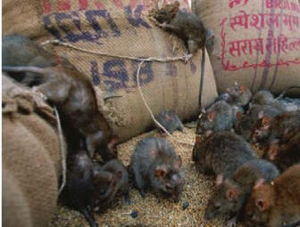
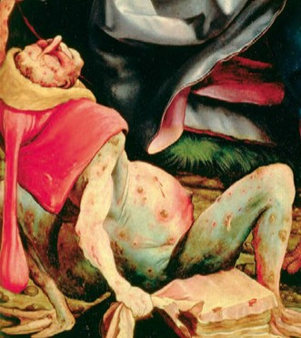
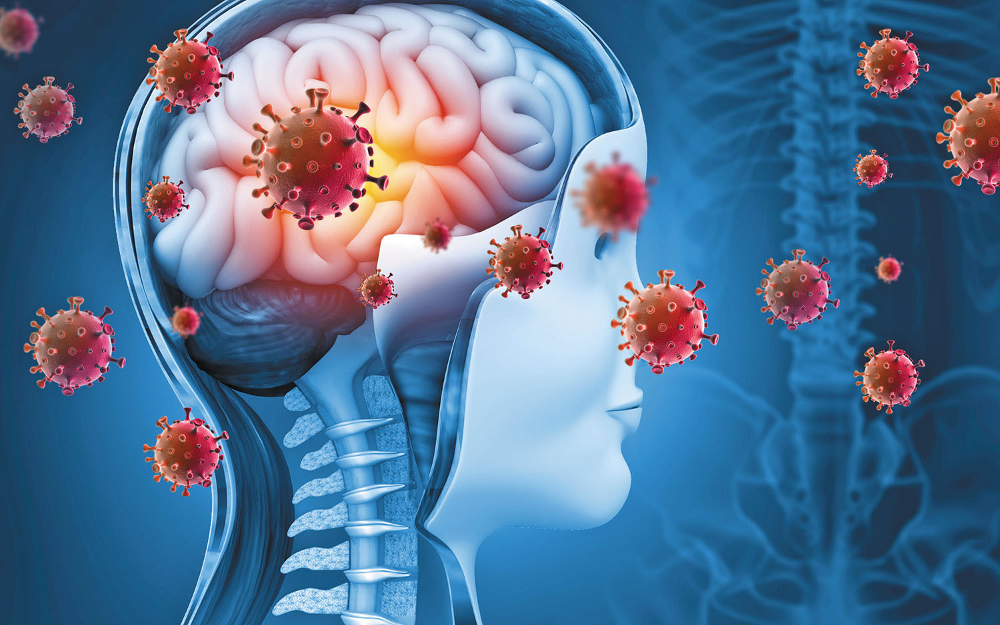
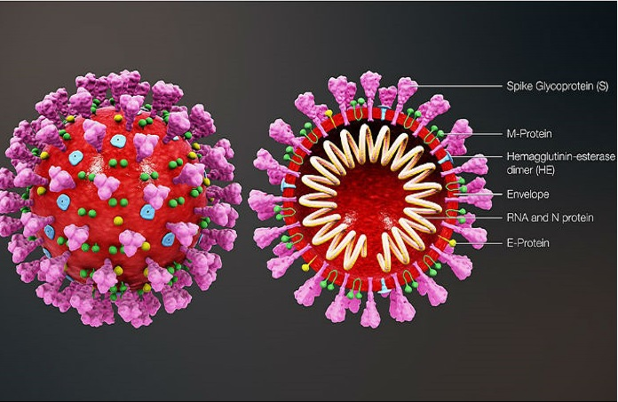

Causes and Symptoms
Black Death
Causes
Beliefs of what caused the black death are infections from fleas that lived on rats/rodents.
It is believed that the Black Death had a combination of the three types of plagues:
Bubonic Plague(carried by rats and rodents)
Pneumonic Plague(caused a person’s respiratory system to like shut down)
Septicemic Plague(spread from the infections of fleas, deadliest)

Symptoms
Swollen Lymph Nodes
Sudden High Fevers and Chills
Headache and Tiredness
Muscle Aches
Bleeding from cuts and scratches
Seizures
Skin Changes
Death

Covid
Causes
Covid was caused by a highly infectious virus called the SARS CoV – 2 virus which greatly affected your respiratory system.
Symptoms
Mainly cold like symptoms such as dry cough, runny nose, sore throat and loss of taste and smell. But they can range from mild to severe.
Extreme Fatigue
Muscle Aches and Headaches
Loss of appetite
The complications of Covid may include respiratory failure and damage to the heart and blood vessels and all grastrointestinal organs.

